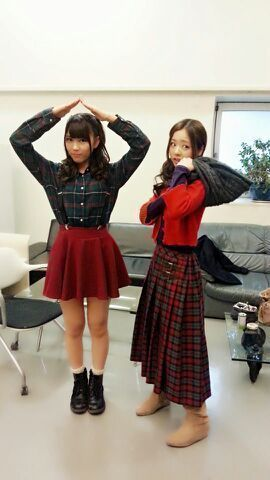
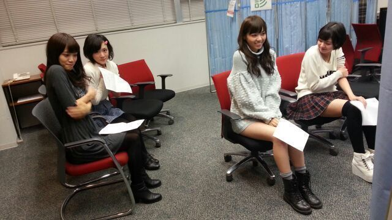

おつかろってぃ〜＼(^o^)／
Rottyだよ☆!!
このロングスカート ポカポカ。
今日は 珍しくお寝坊をしてしまい、
せいらりん♪が電話でおこしてくれたお〜
びっくりして飛び起きて
服着替えて とりあえず歯磨きとメイク道具もって
家飛び出したお〜
メンバーに『ろってぃ-が寝坊するの珍しちぃ-ねー。』
って何回言われたことか...笑
ほんでもって、明日 MUSIC FAIRに
乃木坂さん出ます＼(^o^)／笑
あっ ろってぃーも出ます！！
是非見てくれたら うれちーです！！
フジテレビ (土) 18:00〜18:30
ちなみに 来週も出ます！
そしてそして 今日は朝から生写真の撮影！！
色んなお洋服をきてきたよん^ ^
一気に ダダダダダーっと撮ったから体力つかったなん♪
でも 終わってからも メンバーとワイワイ
やってまちたん♪あは
川後 と 私ろってぃー。(クリスマスを意識したポーズ ぁはん.)

どう ？
川後が クリスマスツリーで
ろってぃーが サンタクロース.
白い袋がなかったから 首に巻いてたのを
利用してみたの。(/-＼*)笑
終ってから 皆で インフルエンザ予防接種...。

皆 ドキドキしていまちゅ..
ではではっ、これから 次のお仕事です！！！
今日も、１日頑張るねん(*´ω｀*)
ぢゃあねん、皆 大好きだよん、LOVEやよん。
のし )))